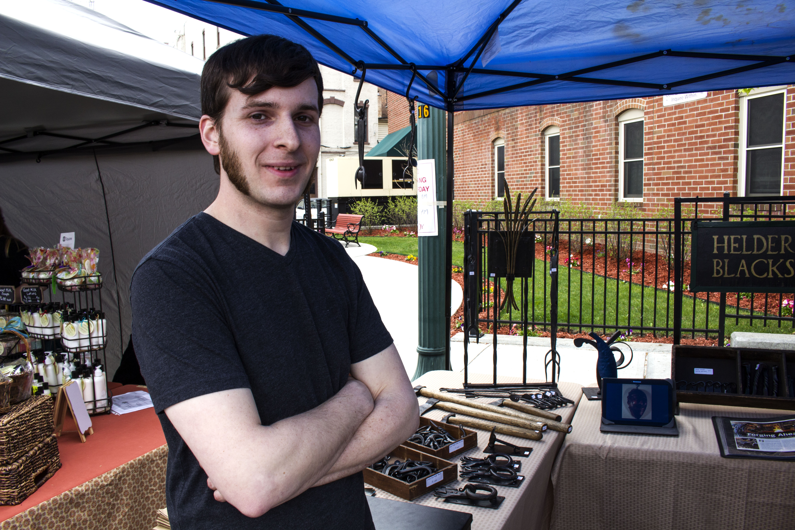
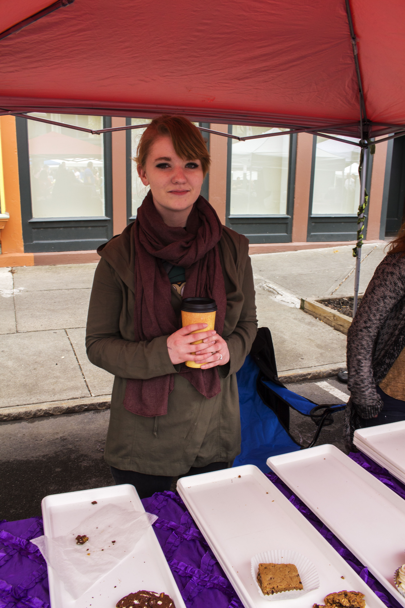
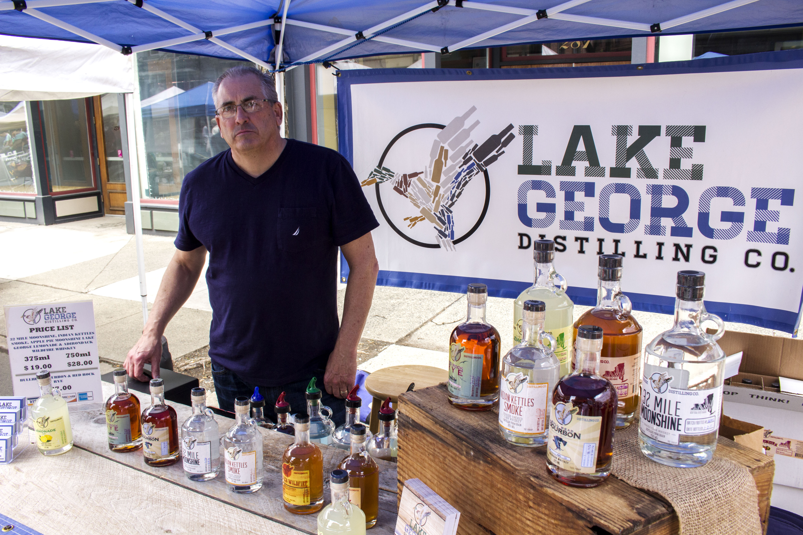

Images |
Projects |
|
One of my first Digital photography assignments! We had to find objects and get up close in order to almost mask exactly what it was, while showing a piece of an object! |
|  |
This photo was taken as part of an assignment called In your face. The goal was to take portrait photo's of workers in their main position of their every day life. This particular man was running a blacksmithing shop in which he sold things he made himself. Over all, he was light hearted and easy to talk to, almost the polar opposite of his dark and heavy creations. |
|  |
This photo was taken as part of an assignment called In your face. The goal was to take portrait photo's of workers in their main position of their every day life. The woman in the picture was involved in running some sort of Bakery. |
|  |
This photo was taken as part of an assignment called In your face. The goal was to take portrait photo's of workers in their main position of their every day life. This man was involved in a local Distillery, unlike the way his photo presents him, he was an extremely friendly man. |